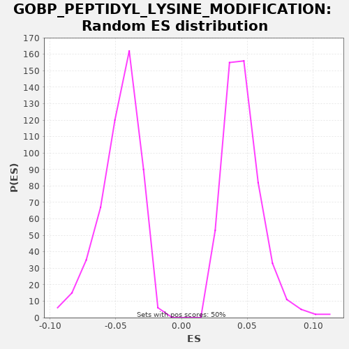

| | | Dataset | A_X_tradeoff |
| Phenotype | NoPhenotypeAvailable |
| Upregulated in class | na_neg |
| GeneSet | GOBP_PEPTIDYL_LYSINE_MODIFICATION |
| Enrichment Score (ES) | -0.27205464 |
| Normalized Enrichment Score (NES) | -5.761783 |
| Nominal p-value | 0.0 |
| FDR q-value | 0.0 |
| FWER p-Value | 0.0 |
Table: GSEA Results Summary
 Fig 1: Enrichment plot: GOBP_PEPTIDYL_LYSINE_MODIFICATION
Fig 1: Enrichment plot: GOBP_PEPTIDYL_LYSINE_MODIFICATION
Profile of the Running ES Score & Positions of GeneSet Members on the Rank Ordered List
| SYMBOL | RANK IN GENE LIST | RANK METRIC SCORE | RUNNING ES | CORE ENRICHMENT | | 1 | P3H3 | 58 | -0.000 | -0.0002 | No |
| 2 | GATA3 | 60 | -0.000 | 0.0026 | No |
| 3 | BAZ1A | 379 | -0.002 | -0.0112 | No |
| 4 | NUP85 | 439 | -0.002 | -0.0114 | No |
| 5 | TAF9 | 941 | -0.005 | -0.0348 | No |
| 6 | MYOCD | 1030 | -0.006 | -0.0365 | No |
| 7 | JMJD6 | 1108 | -0.006 | -0.0377 | No |
| 8 | FOXP3 | 1326 | -0.007 | -0.0462 | No |
| 9 | DHPS | 1356 | -0.007 | -0.0449 | No |
| 10 | TADA3 | 1593 | -0.009 | -0.0543 | No |
| 11 | POLE3 | 1693 | -0.009 | -0.0567 | No |
| 12 | HMG20B | 1820 | -0.010 | -0.0604 | No |
| 13 | SUMO2 | 2144 | -0.012 | -0.0745 | No |
| 14 | TOLLIP | 2188 | -0.012 | -0.0739 | No |
| 15 | GCG | 2296 | -0.013 | -0.0766 | No |
| 16 | NAT8 | 2557 | -0.014 | -0.0874 | No |
| 17 | IVL | 2708 | -0.015 | -0.0923 | No |
| 18 | SIRT3 | 2927 | -0.017 | -0.1009 | No |
| 19 | HDAC10 | 2939 | -0.017 | -0.0986 | No |
| 20 | PLOD2 | 3056 | -0.018 | -0.1018 | No |
| 21 | RPS6KA4 | 3215 | -0.019 | -0.1073 | No |
| 22 | PIAS4 | 3217 | -0.019 | -0.1044 | No |
| 23 | NUP62 | 3385 | -0.020 | -0.1103 | No |
| 24 | DIP2A | 3389 | -0.020 | -0.1076 | No |
| 25 | NSMCE2 | 3529 | -0.021 | -0.1121 | No |
| 26 | DESI1 | 3608 | -0.021 | -0.1133 | No |
| 27 | TWIST1 | 3738 | -0.022 | -0.1172 | No |
| 28 | MECOM | 3817 | -0.023 | -0.1184 | No |
| 29 | SETD4 | 3977 | -0.024 | -0.1239 | No |
| 30 | THAP7 | 4399 | -0.028 | -0.1430 | No |
| 31 | EYA1 | 4758 | -0.031 | -0.1589 | No |
| 32 | SMYD3 | 4769 | -0.031 | -0.1566 | No |
| 33 | MCRS1 | 4791 | -0.032 | -0.1548 | No |
| 34 | KDM4D | 5271 | -0.036 | -0.1771 | No |
| 35 | RTF1 | 5385 | -0.038 | -0.1801 | No |
| 36 | PHF1 | 5453 | -0.039 | -0.1808 | No |
| 37 | MUL1 | 5586 | -0.040 | -0.1848 | No |
| 38 | TADA2A | 5674 | -0.041 | -0.1865 | No |
| 39 | PLOD1 | 5973 | -0.045 | -0.1993 | No |
| 40 | APBB1 | 6048 | -0.046 | -0.2003 | No |
| 41 | EEF1AKMT3 | 6139 | -0.047 | -0.2021 | No |
| 42 | ATAT1 | 6429 | -0.051 | -0.2144 | No |
| 43 | LOXL4 | 6580 | -0.053 | -0.2194 | No |
| 44 | FKBP10 | 6626 | -0.053 | -0.2189 | No |
| 45 | METTL21A | 6762 | -0.055 | -0.2231 | No |
| 46 | EEF1AKMT4 | 6771 | -0.055 | -0.2207 | No |
| 47 | WDR5B | 6788 | -0.055 | -0.2186 | No |
| 48 | PLOD3 | 6957 | -0.058 | -0.2246 | No |
| 49 | ARRB1 | 7166 | -0.061 | -0.2326 | No |
| 50 | LOXL3 | 7433 | -0.065 | -0.2437 | No |
| 51 | TRIM16 | 7556 | -0.066 | -0.2472 | No |
| 52 | TAF12 | 7762 | -0.069 | -0.2551 | No |
| 53 | CAPN3 | 7767 | -0.069 | -0.2524 | No |
| 54 | IRF4 | 7839 | -0.070 | -0.2533 | No |
| 55 | PIWIL2 | 7905 | -0.071 | -0.2538 | No |
| 56 | TRPM4 | 7995 | -0.073 | -0.2556 | No |
| 57 | DOHH | 8013 | -0.073 | -0.2537 | No |
| 58 | WDR61 | 8062 | -0.074 | -0.2533 | No |
| 59 | DYDC2 | 8097 | -0.075 | -0.2523 | No |
| 60 | P3H4 | 8098 | -0.075 | -0.2494 | No |
| 61 | N6AMT1 | 8155 | -0.076 | -0.2495 | No |
| 62 | RWDD3 | 8157 | -0.076 | -0.2467 | No |
| 63 | ATPSCKMT | 8163 | -0.076 | -0.2441 | No |
| 64 | NELFE | 8208 | -0.077 | -0.2435 | No |
| 65 | FLCN | 8372 | -0.079 | -0.2492 | No |
| 66 | LIPT2 | 8422 | -0.080 | -0.2489 | No |
| 67 | SETD6 | 8506 | -0.081 | -0.2504 | No |
| 68 | PER1 | 8518 | -0.082 | -0.2481 | No |
| 69 | SIRT5 | 8523 | -0.082 | -0.2455 | No |
| 70 | HDAC6 | 8527 | -0.082 | -0.2428 | No |
| 71 | ETFBKMT | 8578 | -0.083 | -0.2425 | No |
| 72 | NDUFAB1 | 8627 | -0.084 | -0.2422 | No |
| 73 | TADA1 | 8688 | -0.084 | -0.2425 | No |
| 74 | SMARCB1 | 8692 | -0.084 | -0.2398 | No |
| 75 | JADE2 | 8744 | -0.086 | -0.2396 | No |
| 76 | SMYD2 | 8937 | -0.089 | -0.2468 | No |
| 77 | SIRT4 | 8970 | -0.090 | -0.2456 | No |
| 78 | SET | 9091 | -0.091 | -0.2490 | No |
| 79 | PRDM9 | 9379 | -0.097 | -0.2612 | No |
| 80 | VPS33B | 9433 | -0.098 | -0.2611 | No |
| 81 | SMYD1 | 9487 | -0.099 | -0.2610 | No |
| 82 | UBE2I | 9555 | -0.100 | -0.2617 | No |
| 83 | TTLL12 | 9588 | -0.101 | -0.2605 | No |
| 84 | BLOC1S1 | 9791 | -0.105 | -0.2682 | No |
| 85 | SETMAR | 9846 | -0.106 | -0.2682 | No |
| 86 | GATA2 | 9869 | -0.107 | -0.2665 | No |
| 87 | LIF | 9961 | -0.108 | -0.2684 | No |
| 88 | LIPT1 | 9984 | -0.109 | -0.2667 | No |
| 89 | PRMT6 | 10006 | -0.109 | -0.2649 | No |
| 90 | EEF1AKMT2 | 10080 | -0.111 | -0.2659 | No |
| 91 | PRDM12 | 10104 | -0.111 | -0.2642 | No |
| 92 | UBA2 | 10196 | -0.113 | -0.2661 | No |
| 93 | CTH | 10303 | -0.115 | -0.2688 | No |
| 94 | ACTL6A | 10366 | -0.117 | -0.2692 | Yes |
| 95 | PRDM16 | 10418 | -0.118 | -0.2690 | Yes |
| 96 | NUP133 | 10434 | -0.118 | -0.2669 | Yes |
| 97 | GNL3 | 10466 | -0.119 | -0.2657 | Yes |
| 98 | METTL22 | 10520 | -0.120 | -0.2656 | Yes |
| 99 | MSL1 | 10521 | -0.120 | -0.2628 | Yes |
| 100 | SETD3 | 10538 | -0.120 | -0.2607 | Yes |
| 101 | LEF1 | 10542 | -0.120 | -0.2580 | Yes |
| 102 | ZMPSTE24 | 10558 | -0.121 | -0.2560 | Yes |
| 103 | TGM2 | 10610 | -0.122 | -0.2558 | Yes |
| 104 | PARK7 | 10747 | -0.125 | -0.2600 | Yes |
| 105 | DMAP1 | 10768 | -0.126 | -0.2582 | Yes |
| 106 | SGF29 | 10864 | -0.128 | -0.2604 | Yes |
| 107 | KAT8 | 11000 | -0.132 | -0.2646 | Yes |
| 108 | SETDB2 | 11003 | -0.132 | -0.2618 | Yes |
| 109 | SUPT7L | 11040 | -0.133 | -0.2608 | Yes |
| 110 | PRDM5 | 11050 | -0.133 | -0.2585 | Yes |
| 111 | HAT1 | 11094 | -0.134 | -0.2578 | Yes |
| 112 | TAF6L | 11132 | -0.135 | -0.2569 | Yes |
| 113 | PIAS3 | 11264 | -0.138 | -0.2609 | Yes |
| 114 | PHF20 | 11303 | -0.139 | -0.2601 | Yes |
| 115 | SUMO1 | 11331 | -0.140 | -0.2586 | Yes |
| 116 | LIAS | 11399 | -0.142 | -0.2593 | Yes |
| 117 | IL1B | 11507 | -0.144 | -0.2620 | Yes |
| 118 | RELA | 11511 | -0.144 | -0.2593 | Yes |
| 119 | PAX5 | 11692 | -0.149 | -0.2659 | Yes |
| 120 | CAMKMT | 11698 | -0.149 | -0.2633 | Yes |
| 121 | RPS6KA5 | 11764 | -0.151 | -0.2638 | Yes |
| 122 | TAF10 | 11792 | -0.152 | -0.2624 | Yes |
| 123 | TRIM28 | 11889 | -0.154 | -0.2645 | Yes |
| 124 | NUP93 | 11910 | -0.154 | -0.2627 | Yes |
| 125 | KLF15 | 11915 | -0.155 | -0.2601 | Yes |
| 126 | SUV39H2 | 11921 | -0.155 | -0.2575 | Yes |
| 127 | TAF6 | 11947 | -0.155 | -0.2559 | Yes |
| 128 | EEF1AKMT1 | 11991 | -0.157 | -0.2553 | Yes |
| 129 | NUP43 | 12027 | -0.158 | -0.2543 | Yes |
| 130 | KAT2A | 12041 | -0.158 | -0.2521 | Yes |
| 131 | TAF5 | 12094 | -0.159 | -0.2520 | Yes |
| 132 | KANSL1L | 12123 | -0.160 | -0.2506 | Yes |
| 133 | MAPK3 | 12124 | -0.160 | -0.2478 | Yes |
| 134 | KAT5 | 12162 | -0.161 | -0.2468 | Yes |
| 135 | KAT2B | 12203 | -0.162 | -0.2461 | Yes |
| 136 | PPARGC1A | 12207 | -0.162 | -0.2434 | Yes |
| 137 | EEF2KMT | 12301 | -0.164 | -0.2454 | Yes |
| 138 | RAE1 | 12418 | -0.168 | -0.2486 | Yes |
| 139 | KANSL2 | 12451 | -0.169 | -0.2474 | Yes |
| 140 | PYGO2 | 12565 | -0.172 | -0.2505 | Yes |
| 141 | NDC1 | 12587 | -0.173 | -0.2487 | Yes |
| 142 | CXXC1 | 12590 | -0.173 | -0.2460 | Yes |
| 143 | PIH1D1 | 12704 | -0.176 | -0.2490 | Yes |
| 144 | SIRT7 | 12776 | -0.178 | -0.2499 | Yes |
| 145 | NUP35 | 12792 | -0.178 | -0.2478 | Yes |
| 146 | PWP1 | 12797 | -0.179 | -0.2452 | Yes |
| 147 | BRCA2 | 12814 | -0.179 | -0.2431 | Yes |
| 148 | ISL1 | 12837 | -0.180 | -0.2414 | Yes |
| 149 | DNMT3B | 12897 | -0.181 | -0.2417 | Yes |
| 150 | VCPKMT | 12903 | -0.181 | -0.2391 | Yes |
| 151 | MSL3 | 12974 | -0.183 | -0.2399 | Yes |
| 152 | ARNT | 13007 | -0.185 | -0.2387 | Yes |
| 153 | MEN1 | 13074 | -0.187 | -0.2393 | Yes |
| 154 | PRKAA1 | 13127 | -0.188 | -0.2392 | Yes |
| 155 | KAT14 | 13159 | -0.189 | -0.2379 | Yes |
| 156 | EZH1 | 13263 | -0.193 | -0.2405 | Yes |
| 157 | HINT2 | 13282 | -0.193 | -0.2385 | Yes |
| 158 | SPHK2 | 13297 | -0.194 | -0.2364 | Yes |
| 159 | WDR5 | 13328 | -0.195 | -0.2351 | Yes |
| 160 | KMT2E | 13405 | -0.197 | -0.2363 | Yes |
| 161 | ATP7A | 13492 | -0.200 | -0.2379 | Yes |
| 162 | RLF | 13529 | -0.202 | -0.2369 | Yes |
| 163 | BEND3 | 13542 | -0.202 | -0.2347 | Yes |
| 164 | KMT5C | 13568 | -0.203 | -0.2332 | Yes |
| 165 | BAG6 | 13613 | -0.205 | -0.2326 | Yes |
| 166 | RUVBL2 | 13625 | -0.205 | -0.2303 | Yes |
| 167 | MCM3AP | 13644 | -0.206 | -0.2284 | Yes |
| 168 | RASD2 | 13698 | -0.207 | -0.2283 | Yes |
| 169 | GCSH | 13731 | -0.208 | -0.2271 | Yes |
| 170 | SPI1 | 13740 | -0.208 | -0.2247 | Yes |
| 171 | ESCO1 | 13833 | -0.212 | -0.2267 | Yes |
| 172 | TET2 | 13867 | -0.213 | -0.2255 | Yes |
| 173 | AAAS | 13890 | -0.213 | -0.2238 | Yes |
| 174 | NUP37 | 13909 | -0.214 | -0.2219 | Yes |
| 175 | WBP2 | 13913 | -0.214 | -0.2192 | Yes |
| 176 | YEATS2 | 13919 | -0.214 | -0.2166 | Yes |
| 177 | PCGF2 | 13938 | -0.215 | -0.2147 | Yes |
| 178 | SNW1 | 14025 | -0.218 | -0.2163 | Yes |
| 179 | VIPAS39 | 14050 | -0.219 | -0.2147 | Yes |
| 180 | SETD1A | 14153 | -0.223 | -0.2172 | Yes |
| 181 | HDAC4 | 14172 | -0.224 | -0.2153 | Yes |
| 182 | EZH2 | 14174 | -0.224 | -0.2125 | Yes |
| 183 | LOXL2 | 14252 | -0.226 | -0.2137 | Yes |
| 184 | ARID4A | 14272 | -0.227 | -0.2118 | Yes |
| 185 | EHMT1 | 14353 | -0.230 | -0.2131 | Yes |
| 186 | NUP214 | 14401 | -0.232 | -0.2127 | Yes |
| 187 | NAA60 | 14417 | -0.233 | -0.2107 | Yes |
| 188 | ATG5 | 14468 | -0.235 | -0.2104 | Yes |
| 189 | MRGBP | 14498 | -0.236 | -0.2091 | Yes |
| 190 | IFIH1 | 14516 | -0.237 | -0.2071 | Yes |
| 191 | GTF2B | 14542 | -0.237 | -0.2056 | Yes |
| 192 | LOXL1 | 14561 | -0.239 | -0.2037 | Yes |
| 193 | NUP188 | 14571 | -0.239 | -0.2013 | Yes |
| 194 | SETD5 | 14596 | -0.240 | -0.1997 | Yes |
| 195 | NUP160 | 14607 | -0.241 | -0.1973 | Yes |
| 196 | TRMT112 | 14673 | -0.243 | -0.1979 | Yes |
| 197 | ING4 | 14701 | -0.245 | -0.1964 | Yes |
| 198 | ASH2L | 14713 | -0.246 | -0.1942 | Yes |
| 199 | PHF19 | 14748 | -0.247 | -0.1931 | Yes |
| 200 | SIRT2 | 14791 | -0.249 | -0.1924 | Yes |
| 201 | EED | 14822 | -0.250 | -0.1911 | Yes |
| 202 | BRD4 | 14836 | -0.251 | -0.1890 | Yes |
| 203 | TADA2B | 14870 | -0.252 | -0.1878 | Yes |
| 204 | ING3 | 14902 | -0.254 | -0.1866 | Yes |
| 205 | BRPF3 | 14946 | -0.256 | -0.1860 | Yes |
| 206 | CHEK1 | 15021 | -0.259 | -0.1870 | Yes |
| 207 | BCL11A | 15040 | -0.260 | -0.1851 | Yes |
| 208 | PIAS1 | 15081 | -0.261 | -0.1843 | Yes |
| 209 | SENP7 | 15118 | -0.263 | -0.1834 | Yes |
| 210 | NUP205 | 15220 | -0.268 | -0.1858 | Yes |
| 211 | EGR2 | 15244 | -0.269 | -0.1841 | Yes |
| 212 | PHF14 | 15270 | -0.270 | -0.1826 | Yes |
| 213 | NUP50 | 15328 | -0.273 | -0.1827 | Yes |
| 214 | NOC2L | 15333 | -0.273 | -0.1801 | Yes |
| 215 | MLLT6 | 15391 | -0.275 | -0.1802 | Yes |
| 216 | TAF5L | 15399 | -0.276 | -0.1777 | Yes |
| 217 | TOPORS | 15462 | -0.279 | -0.1781 | Yes |
| 218 | HDAC2 | 15504 | -0.281 | -0.1774 | Yes |
| 219 | MORF4L1 | 15506 | -0.281 | -0.1746 | Yes |
| 220 | KAT6B | 15564 | -0.284 | -0.1747 | Yes |
| 221 | SIRT1 | 15568 | -0.284 | -0.1720 | Yes |
| 222 | EHMT2 | 15634 | -0.287 | -0.1726 | Yes |
| 223 | RBBP5 | 15663 | -0.289 | -0.1712 | Yes |
| 224 | CRTC2 | 15676 | -0.289 | -0.1689 | Yes |
| 225 | USPL1 | 15686 | -0.290 | -0.1665 | Yes |
| 226 | KANSL3 | 15789 | -0.295 | -0.1690 | Yes |
| 227 | KMT2D | 15893 | -0.301 | -0.1716 | Yes |
| 228 | HMG20A | 15924 | -0.302 | -0.1703 | Yes |
| 229 | NUP210 | 15938 | -0.303 | -0.1681 | Yes |
| 230 | DPY30 | 16018 | -0.307 | -0.1694 | Yes |
| 231 | OGT | 16147 | -0.314 | -0.1732 | Yes |
| 232 | SEH1L | 16149 | -0.314 | -0.1704 | Yes |
| 233 | MTF2 | 16184 | -0.316 | -0.1693 | Yes |
| 234 | MSL2 | 16194 | -0.316 | -0.1670 | Yes |
| 235 | ING5 | 16210 | -0.317 | -0.1649 | Yes |
| 236 | CBX4 | 16268 | -0.320 | -0.1650 | Yes |
| 237 | DOT1L | 16272 | -0.321 | -0.1623 | Yes |
| 238 | ZMIZ1 | 16291 | -0.321 | -0.1604 | Yes |
| 239 | NUP155 | 16304 | -0.322 | -0.1582 | Yes |
| 240 | IWS1 | 16333 | -0.324 | -0.1568 | Yes |
| 241 | POM121 | 16339 | -0.324 | -0.1542 | Yes |
| 242 | SMAD4 | 16343 | -0.325 | -0.1515 | Yes |
| 243 | PIAS2 | 16361 | -0.326 | -0.1495 | Yes |
| 244 | STX1A | 16389 | -0.328 | -0.1481 | Yes |
| 245 | NCOA3 | 16418 | -0.329 | -0.1467 | Yes |
| 246 | MDM2 | 16453 | -0.332 | -0.1456 | Yes |
| 247 | SENP5 | 16454 | -0.332 | -0.1427 | Yes |
| 248 | JADE3 | 16460 | -0.332 | -0.1401 | Yes |
| 249 | BRPF1 | 16479 | -0.333 | -0.1382 | Yes |
| 250 | BRD7 | 16483 | -0.333 | -0.1355 | Yes |
| 251 | USP22 | 16529 | -0.336 | -0.1350 | Yes |
| 252 | GTF3C4 | 16549 | -0.337 | -0.1332 | Yes |
| 253 | NAP1L2 | 16577 | -0.340 | -0.1317 | Yes |
| 254 | GFI1 | 16585 | -0.340 | -0.1292 | Yes |
| 255 | KDM3A | 16596 | -0.341 | -0.1269 | Yes |
| 256 | MBD3 | 16665 | -0.347 | -0.1276 | Yes |
| 257 | NSD3 | 16683 | -0.348 | -0.1256 | Yes |
| 258 | CHD5 | 16701 | -0.349 | -0.1237 | Yes |
| 259 | CTR9 | 16720 | -0.350 | -0.1217 | Yes |
| 260 | PAXIP1 | 16721 | -0.351 | -0.1189 | Yes |
| 261 | PRKAA2 | 16723 | -0.351 | -0.1161 | Yes |
| 262 | BRD1 | 16745 | -0.352 | -0.1143 | Yes |
| 263 | SENP6 | 16822 | -0.357 | -0.1155 | Yes |
| 264 | SUV39H1 | 16830 | -0.358 | -0.1130 | Yes |
| 265 | KMT2B | 16842 | -0.359 | -0.1107 | Yes |
| 266 | WDR82 | 16850 | -0.359 | -0.1082 | Yes |
| 267 | SETD1B | 16864 | -0.360 | -0.1060 | Yes |
| 268 | NAA40 | 16893 | -0.362 | -0.1046 | Yes |
| 269 | NUP107 | 16992 | -0.371 | -0.1069 | Yes |
| 270 | SIN3A | 17054 | -0.375 | -0.1072 | Yes |
| 271 | CLOCK | 17141 | -0.382 | -0.1089 | Yes |
| 272 | KANSL1 | 17162 | -0.384 | -0.1071 | Yes |
| 273 | BCOR | 17176 | -0.385 | -0.1049 | Yes |
| 274 | ATF2 | 17196 | -0.387 | -0.1030 | Yes |
| 275 | NCOA1 | 17253 | -0.392 | -0.1031 | Yes |
| 276 | MECP2 | 17260 | -0.392 | -0.1006 | Yes |
| 277 | BRCA1 | 17269 | -0.393 | -0.0981 | Yes |
| 278 | YEATS4 | 17308 | -0.397 | -0.0972 | Yes |
| 279 | MEAF6 | 17338 | -0.399 | -0.0959 | Yes |
| 280 | TAF7 | 17364 | -0.403 | -0.0944 | Yes |
| 281 | DR1 | 17369 | -0.403 | -0.0917 | Yes |
| 282 | SUMO3 | 17382 | -0.404 | -0.0895 | Yes |
| 283 | CTBP1 | 17393 | -0.405 | -0.0872 | Yes |
| 284 | HCFC1 | 17445 | -0.411 | -0.0870 | Yes |
| 285 | EP300 | 17453 | -0.412 | -0.0845 | Yes |
| 286 | NUP153 | 17456 | -0.412 | -0.0817 | Yes |
| 287 | EP400 | 17482 | -0.415 | -0.0802 | Yes |
| 288 | KMT5A | 17533 | -0.421 | -0.0799 | Yes |
| 289 | MORF4L2 | 17567 | -0.423 | -0.0788 | Yes |
| 290 | TPR | 17580 | -0.424 | -0.0766 | Yes |
| 291 | MAP3K7 | 17640 | -0.431 | -0.0768 | Yes |
| 292 | SENP1 | 17666 | -0.433 | -0.0753 | Yes |
| 293 | SENP2 | 17668 | -0.433 | -0.0725 | Yes |
| 294 | KDM6A | 17673 | -0.434 | -0.0698 | Yes |
| 295 | SOX4 | 17713 | -0.438 | -0.0690 | Yes |
| 296 | KAT7 | 17738 | -0.442 | -0.0674 | Yes |
| 297 | EPC2 | 17746 | -0.443 | -0.0649 | Yes |
| 298 | NSD1 | 17764 | -0.445 | -0.0629 | Yes |
| 299 | SENP3 | 17767 | -0.445 | -0.0602 | Yes |
| 300 | NUP54 | 17771 | -0.446 | -0.0575 | Yes |
| 301 | CREBBP | 17787 | -0.447 | -0.0554 | Yes |
| 302 | NUP88 | 17793 | -0.448 | -0.0528 | Yes |
| 303 | KMT5B | 17799 | -0.449 | -0.0502 | Yes |
| 304 | DIP2B | 17805 | -0.449 | -0.0476 | Yes |
| 305 | TRRAP | 17815 | -0.450 | -0.0452 | Yes |
| 306 | SETDB1 | 17835 | -0.452 | -0.0434 | Yes |
| 307 | TAF1 | 17844 | -0.453 | -0.0409 | Yes |
| 308 | NUP98 | 17914 | -0.462 | -0.0417 | Yes |
| 309 | PHF20L1 | 17933 | -0.465 | -0.0398 | Yes |
| 310 | EPC1 | 17940 | -0.466 | -0.0372 | Yes |
| 311 | TET3 | 17945 | -0.467 | -0.0346 | Yes |
| 312 | ZZZ3 | 17951 | -0.468 | -0.0320 | Yes |
| 313 | AUTS2 | 17986 | -0.472 | -0.0309 | Yes |
| 314 | HDAC9 | 18000 | -0.474 | -0.0287 | Yes |
| 315 | SETD2 | 18018 | -0.476 | -0.0268 | Yes |
| 316 | LDB1 | 18021 | -0.477 | -0.0240 | Yes |
| 317 | SRCAP | 18044 | -0.481 | -0.0223 | Yes |
| 318 | RUVBL1 | 18112 | -0.493 | -0.0230 | Yes |
| 319 | CTCF | 18189 | -0.505 | -0.0241 | Yes |
| 320 | SETD7 | 18260 | -0.519 | -0.0249 | Yes |
| 321 | MBIP | 18288 | -0.525 | -0.0234 | Yes |
| 322 | NSD2 | 18301 | -0.527 | -0.0212 | Yes |
| 323 | LOX | 18311 | -0.529 | -0.0188 | Yes |
| 324 | SMC5 | 18336 | -0.535 | -0.0172 | Yes |
| 325 | SAE1 | 18423 | -0.552 | -0.0189 | Yes |
| 326 | NAA50 | 18445 | -0.556 | -0.0171 | Yes |
| 327 | EGR1 | 18450 | -0.557 | -0.0145 | Yes |
| 328 | KAT6A | 18477 | -0.564 | -0.0130 | Yes |
| 329 | ASH1L | 18481 | -0.566 | -0.0103 | Yes |
| 330 | RIF1 | 18499 | -0.570 | -0.0083 | Yes |
| 331 | CTNNB1 | 18528 | -0.578 | -0.0069 | Yes |
| 332 | GNL3L | 18537 | -0.580 | -0.0045 | Yes |
| 333 | JARID2 | 18616 | -0.604 | -0.0057 | Yes |
| 334 | GLYR1 | 18644 | -0.613 | -0.0043 | Yes |
| 335 | ATRX | 18664 | -0.616 | -0.0024 | Yes |
| 336 | EID1 | 18682 | -0.623 | -0.0004 | Yes |
| 337 | KDM1A | 18683 | -0.624 | 0.0024 | Yes |
| 338 | JADE1 | 18722 | -0.637 | 0.0033 | Yes |
| 339 | BRD8 | 18745 | -0.646 | 0.0050 | Yes |
| 340 | RANBP2 | 18746 | -0.646 | 0.0079 | Yes |
| 341 | SUZ12 | 18753 | -0.648 | 0.0104 | Yes |
| 342 | KMT2A | 18759 | -0.649 | 0.0130 | Yes |
| 343 | ACTL6B | 18774 | -0.656 | 0.0151 | Yes |
| 344 | KMT2C | 18818 | -0.680 | 0.0157 | Yes |
| 345 | MUC1 | 18935 | -0.739 | 0.0125 | Yes |
| 346 | RANGAP1 | 19012 | -0.779 | 0.0114 | Yes |
| 347 | DNMT1 | 19063 | -0.816 | 0.0116 | Yes |
| 348 | SNCA | 19238 | -1.018 | 0.0054 | Yes |
| 349 | MYB | 19271 | -1.066 | 0.0066 | Yes |
| 350 | NNAT | 19430 | -1.606 | 0.0012 | Yes |
Table: GSEA details [plain text format]

Fig 2: GOBP_PEPTIDYL_LYSINE_MODIFICATION: Random ES distribution
Gene set null distribution of ES for GOBP_PEPTIDYL_LYSINE_MODIFICATION